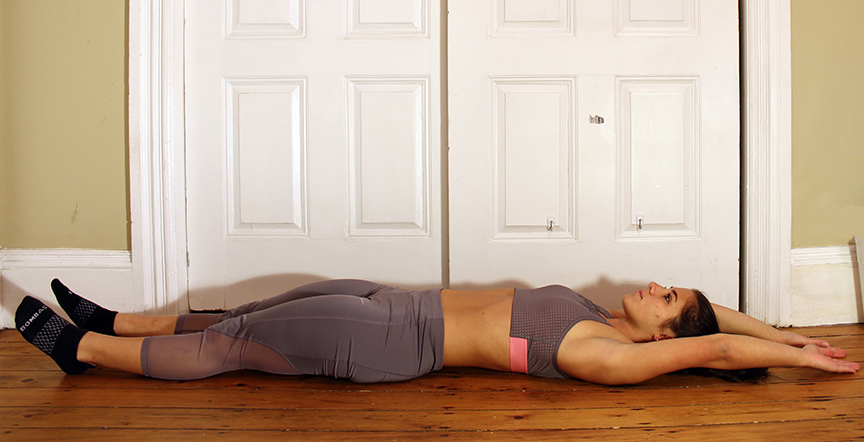
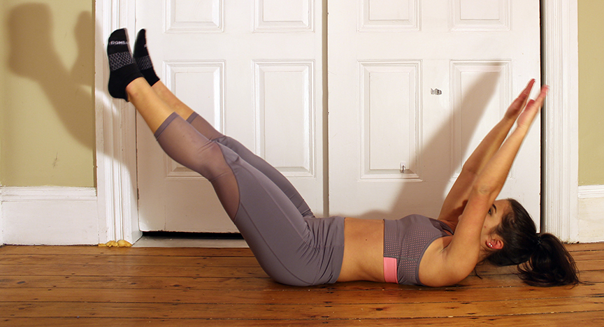
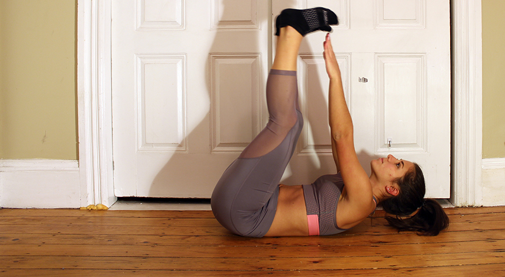
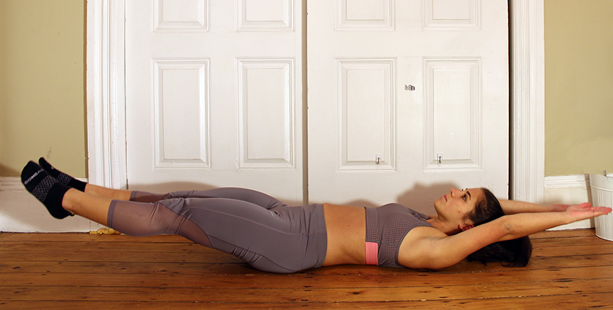
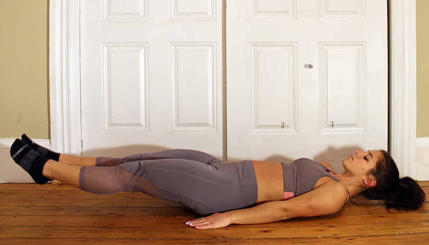
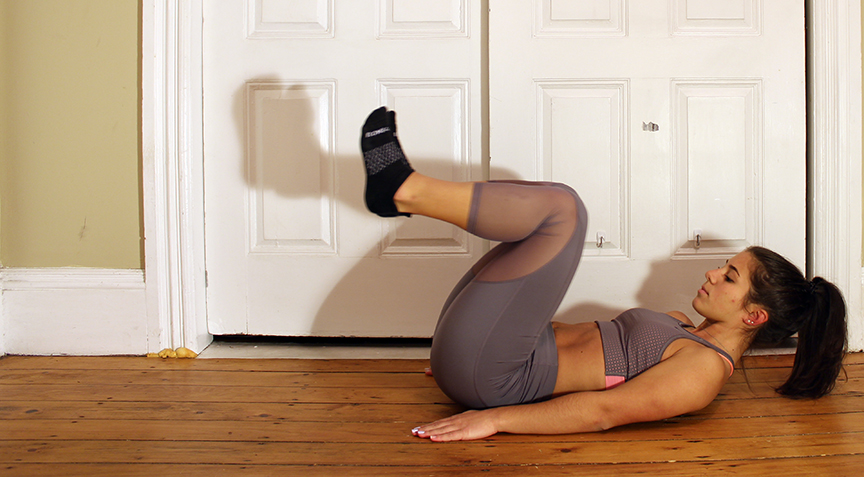
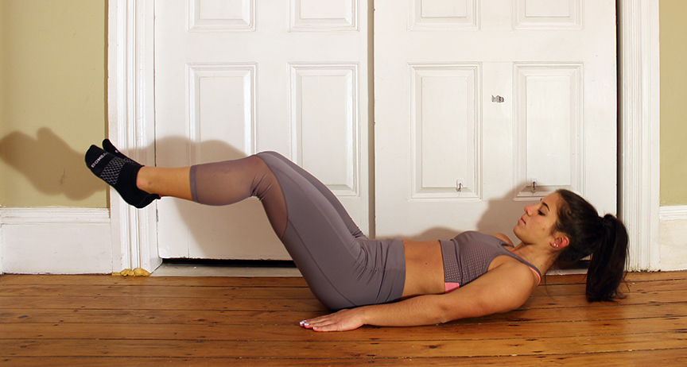
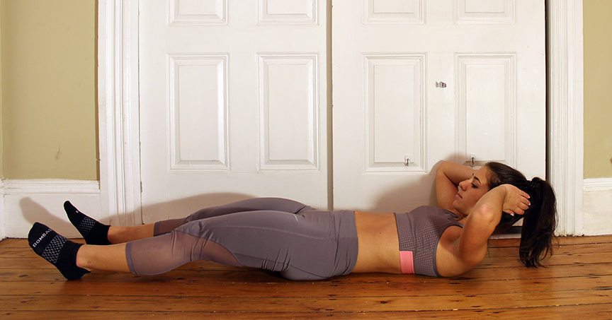
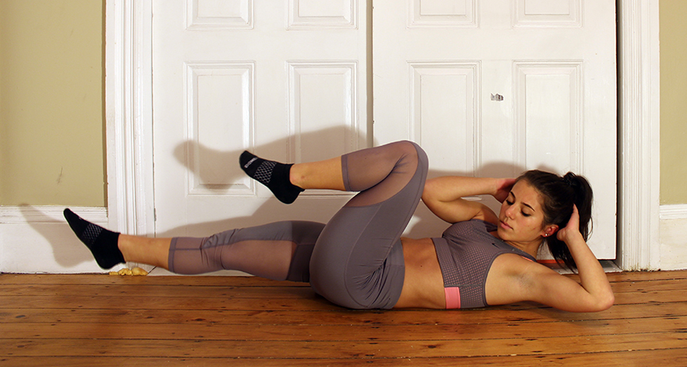
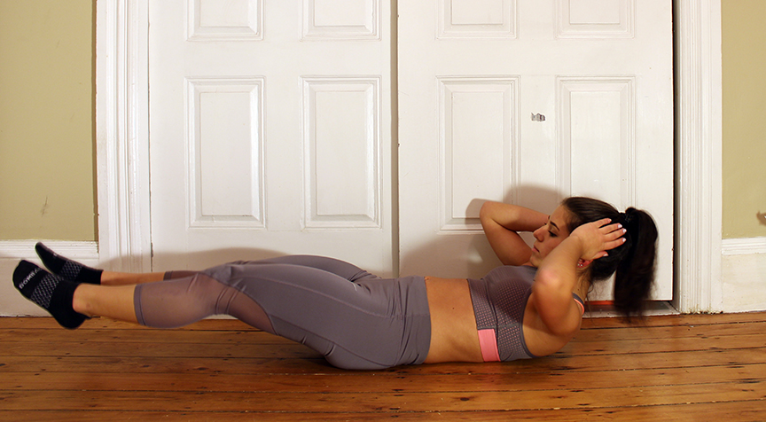

The Right Way to Start Your Day
15 Minute Ab Workout to Keep Your Summer Body
Leg Raise to Toe Touch
Tip: Perform following exercise on a yoga mat, towels, or carpet to make a more comfortable surface.
1:
Lay flat with back on ground. Legs straight out and arms extended up pointing away from your body.

2:
Raise your legs and arms upwards until they meet in the middle, squeezing from your abdomen.

3:
Once your legs and arms are as straight up as possible, crunch up to touch your toes.

4:
Slowly lower back into starting position, but do not allow feet to hit ground. Stop lowering your legs once they have reached a couple inches from the ground.

Repeat for 3 sets of 20 reps.
Full Extension Crunches
Tip: Perform following exercise on a yoga mat, towels, or carpet to make a more comfortable surface.
1:
Lay flat with back on ground. Legs straight out and arms straight down by sides.

2:
Bend at knees bringing legs towards your chest while reaching for your toes with your arms. You will need to lift your head and back slightly off the ground to target your abs.

3:
Slowly extend legs back out while laying head back down. Do not allow feet to hit floor, keep them in the air for the entire set.

Repeat 20 times for 3 sets.
Bicycle Crunches
Tip: Perform following exercise on a yoga mat, towels, or carpet to make a more comfortable surface.
1:
Lay flat with back on ground. Legs straight out and arms bent at elbows with hands behind head.

2:
Bring one leg towards chest bending at knee. At the same time bring opposite arm’s elbow to knee. You will need to lift you head off the ground in order to do so.

3:
Return back to starting position, but do not allow feet to hit floor. Then repeat with other leg and arm. Go back and forth in a quick motion rotating sides.
